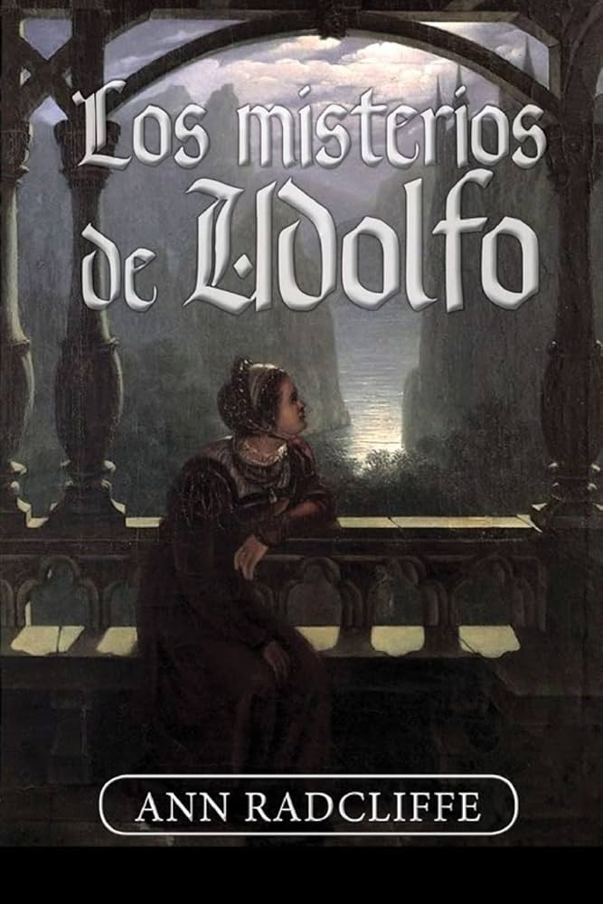

-
 El italiano o el confesionario de los penitentes negros" (1797)
El italiano o el confesionario de los penitentes negros" (1797)
Esta novela gótica sigue la historia de Ellena Rosalba y su amante, Vivaldi, mientras intentan escapar de las maquinaciones del siniestro monje Schedoni y de una conspiración que involucra el misterioso "Confesionario de los Penitentes Negros". El libro explora temas de intriga, horror y romance en un ambiente cargado de tensión y misterio.
-
Aventuras del bosque" (1791)
También conocida como "Los romances del bosque", esta novela sigue a Adeline, una joven que huye de un destino cruel y se refugia en un bosque junto a una familia benévola. La historia combina elementos de aventura, romance y misterio, y destaca por su ambientación en la naturaleza y su exploración de los miedos humanos y los peligros ocultos.
-

Los misterios de Udolfo" (1794)
Considerada una de las obras maestras de la literatura gótica, esta novela narra las aventuras de Emily St. Aubert, una joven que queda huérfana y es llevada al castillo de Udolfo, donde enfrenta terrores sobrenaturales, secretos familiares y la amenaza de su siniestro tío, Montoni. La obra se caracteriza por su atmósfera sombría y su detallada descripción de los paisajes.